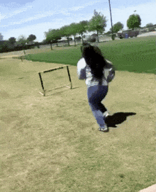
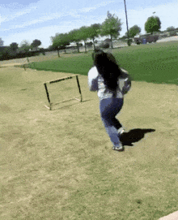

Daniel Esteban Vasquez
Mis metas que me gustaria alcanzar y por las que estoy luchando son conseguir una moto, graduarme del Sena empezar mi nuevo trabajo como desarrollador de software y seguir estudiando en el Sena para ser tecnologo
Mis metas que me gustaria alcanzar y por las que estoy luchando son conseguir una moto, graduarme del Sena empezar mi nuevo trabajo como desarrollador de software y seguir estudiando en el Sena para ser tecnologo
